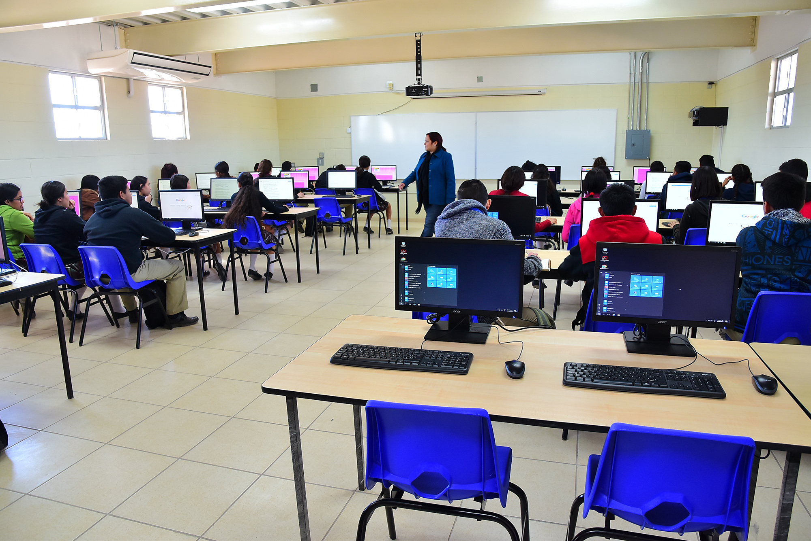
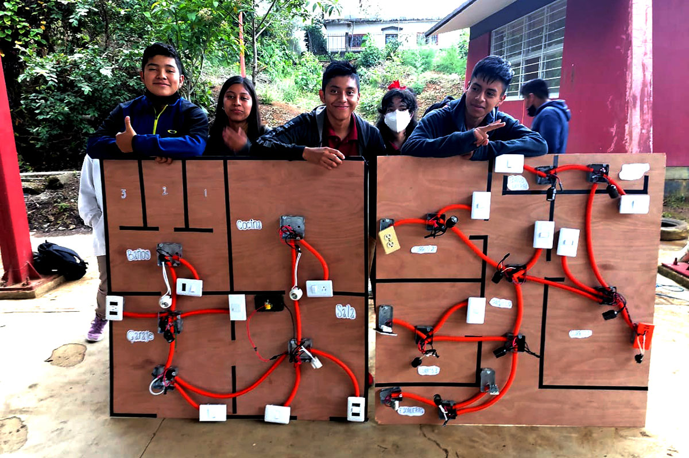
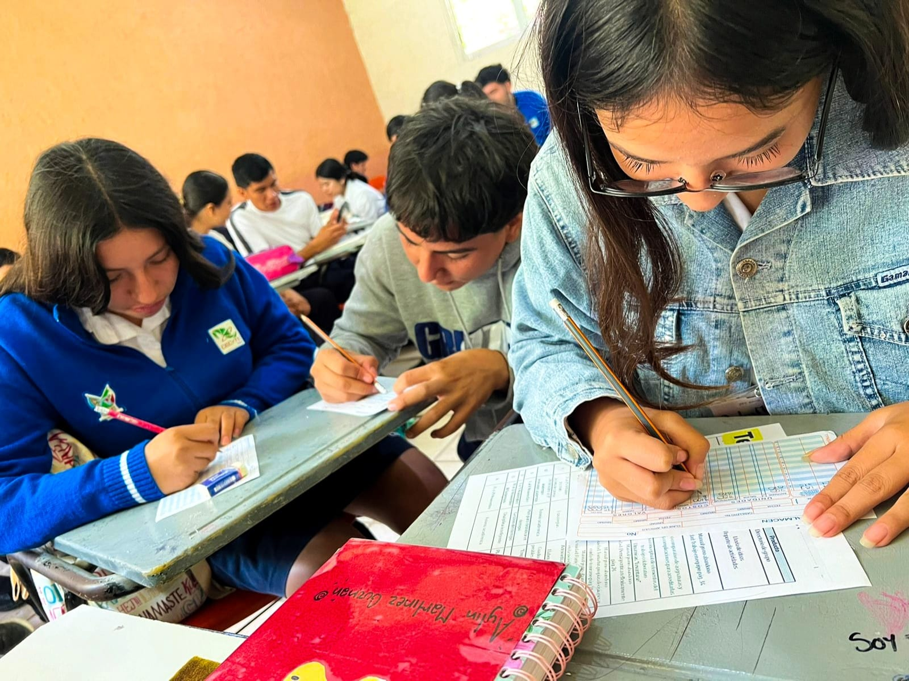
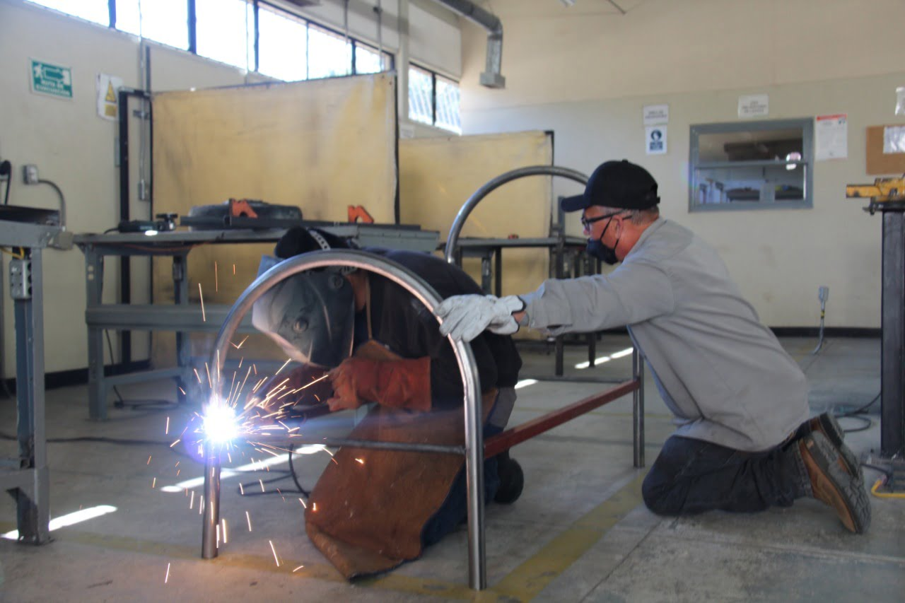

Oferta Académica
Explora las oportunidades que te ofrece nuestro plantel Pedro Escobedo con una variedad de carreras técnicas diseñadas para prepararte profesionalmente en áreas clave del sector industrial y tecnológico. Nuestro objetivo es brindarte una formación práctica, actualizada y orientada al mundo laboral.

Programación
Aprende a desarrollar software, aplicaciones web y móviles, bases de datos y más.

Electrónica
Desarrolla habilidades para reparar, diseñar y mantener circuitos y sistemas electrónicos.

Administración
Capacítate en procesos administrativos, contables y financieros para empresas.

Mantenimiento Industrial
Formación integral para la supervisión, reparación y optimización de maquinaria y equipos industriales, asegurando su funcionamiento eficiente y seguro.